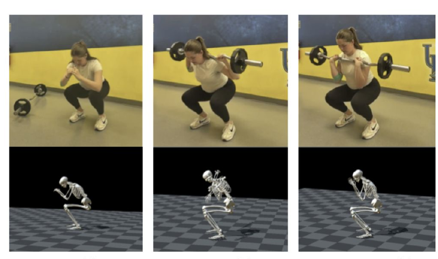
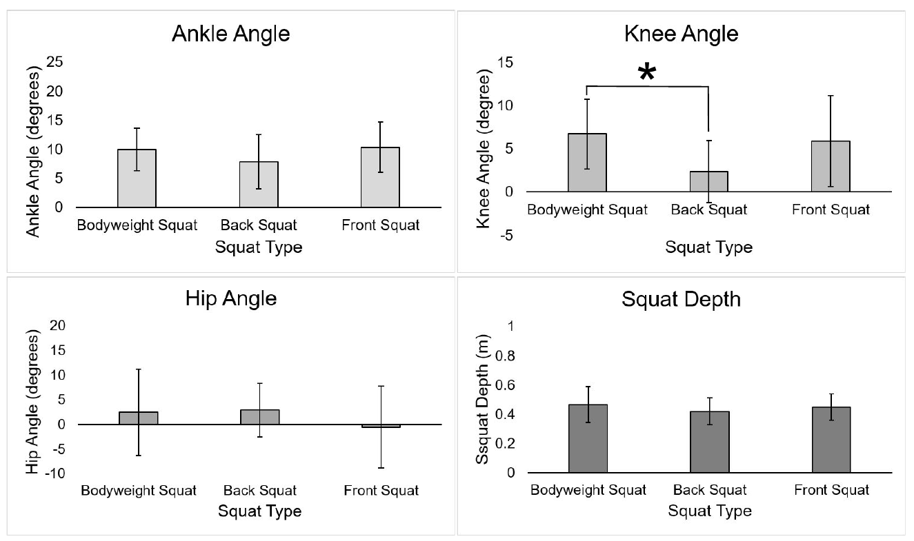
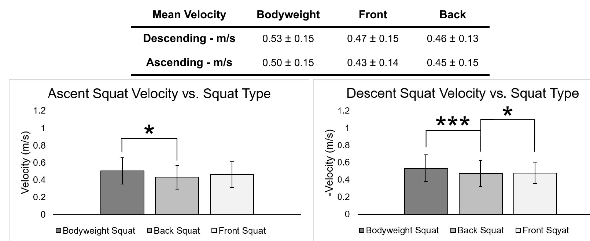
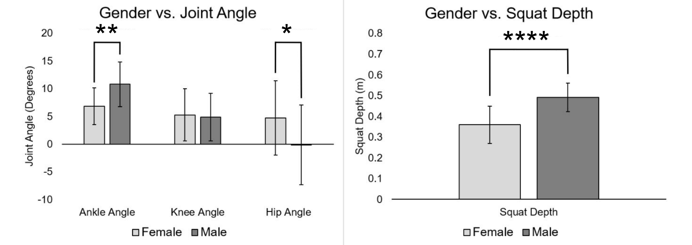

A markerless motion capture study of hip, knee, and ankle mechanics across bodyweight, front, and back squats in 19 participants, with implications for injury prevention and rehabilitation.
The squat is central to both athletic training and rehabilitation, but load placement changes how the movement is executed. Front and back squats shift the center of mass differently, which alters trunk position and the joint angles the lifter adopts to stay balanced.
This study quantified those differences across bodyweight, front, and back squats in 19 healthy college students, capturing hip, knee, and ankle angles, squat depth, and ascent and descent velocity with OpenCap. Statistical testing in JMP identified which effects were driven by squat type and which by participant gender.

Nineteen healthy college students with no injury history performed seven repetitions each of bodyweight, front, and back squats at 45 lb, shoulder-width stance, with three minutes of rest between sets. The fifth repetition was analyzed. Kinematics were captured with OpenCap, a markerless system using tripod-mounted cameras, after calibration and a standardized demonstration.
Six outcomes were extracted from the OpenCap kinematics: knee, hip, and ankle angle, squat depth, and ascending and descending velocity. One-way ANOVA tested for differences across squat type, with Tukey HSD post-hoc comparisons, and a two-way ANOVA evaluated gender as a second factor. Significance was set at p < 0.05.

Knee angle differed significantly across squat type (p = 0.0335), with bodyweight squats producing greater knee flexion than back squats. Ankle angle, hip angle, and squat depth showed no significant differences, indicating that load placement changes knee mechanics more than the overall depth or posture achieved.

Bodyweight squats were fastest in both directions. Ascent velocity differed between bodyweight and back squats (p = 0.0341), while descent showed differences between bodyweight and back (p = 0.0095) and between back and front (p = 0.0127). Descending speeds ranged from 0.46 to 0.53 m/s, ascending from 0.43 to 0.50 m/s.

The two-way ANOVA found gender effects independent of squat type. Ankle angle (p = 0.0031), hip angle (p = 0.0471), and squat depth (p < 0.0001) all differed between male and female participants, likely reflecting differences in anatomy, ankle mobility, and strength. Knee angle showed no gender effect.
Squat type, load placement, and gender all influence squat mechanics, and the knee angle and velocity findings align with existing literature. Front and bodyweight squats may offer better movement control during rehabilitation. The main limitations are a small sample drawn entirely from young, healthy adults, so extension to clinical populations would require more participants and a wider range of loading conditions.